Computer Vision Water Gun Turret
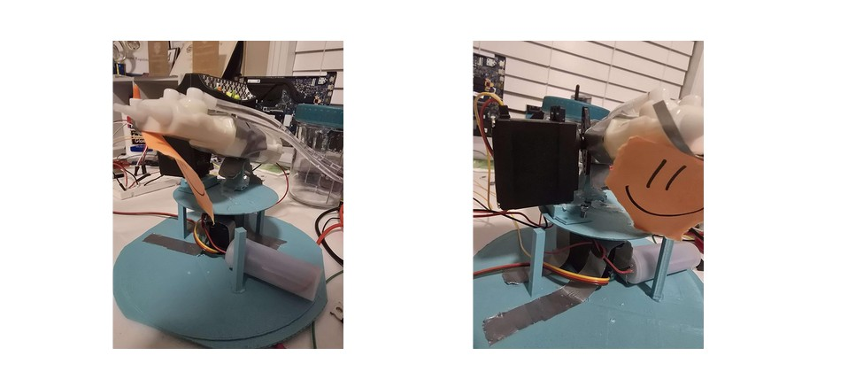
Idea: Build a two-axis turret that finds a person in a live camera stream, aims at them with servos, and fires a water gun through a relay. Built to wake me up in the morning.
What It Does
- Reads a webcam stream over RTMP and runs MediaPipe pose detection to locate the nose landmark
- Converts the pixel position into pulse widths for two servos (pan and tilt) driven with pigpio on a Raspberry Pi
- Fires by switching a relay on the trigger, with a fixed fire duration and a cooldown between shots
Engineering Details
- Latency: a dedicated thread grabs frames and keeps only the newest one (buffer size 1), because buffered RTMP frames made the turret lag badly
- Compute: pose detection runs on every third frame and uses the lightweight model to keep CPU load down
- Control: exponential smoothing on the target position, a deadzone around the center, and a per-update step limit on servo movement to stop jitter and overshoot
- Safety and setup: calibrated pulse-width limits per axis, a scheduled start time, and cleanup that releases the servos and trigger on exit
Key Components
Docs/Code
Photo Gallery

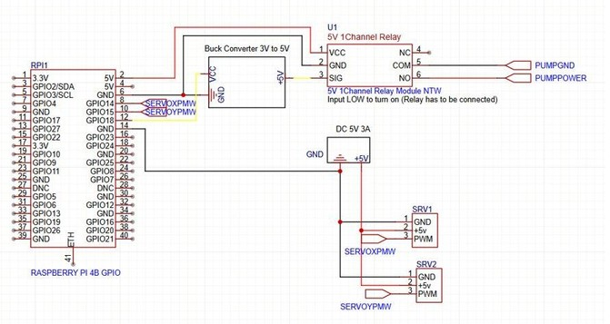
Confetti Popper Launcher - Tech Club Fair Project July 2024
Idea: Build a confetti popper launcher for the Tech Club Fair to attract people to the booth and get them to sign up.
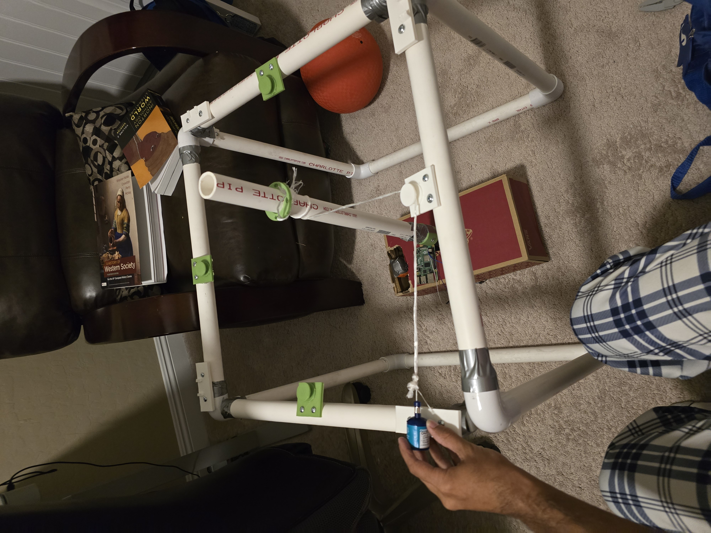
Goals
- Design and build a confetti popper launcher
- Use a drill motor for the pulling mechanism
- Build a timer display app that communicates with Raspberry Pi GPIO pins
- Use Flask for app backend communication on localhost
- Write a C++ file for triggering GPIO pins
- Code an LED blinker to build suspense and attention using a bit of math!
Skills Learnt
- Electron JS basics
- Some CAD (used OnShape)
- Flask basics (the concept of a server and localhost)
- Raspberry Pi GPIO pin control
- Some Linux for permission requirements
Key Components
Docs and Code
Docs have all code explained!Final Thoughts
Such a fun project, and it drew a lot of attention to the Tech Club booth and got 25 signups! I was happy to apply some math, learn about servers, and step into ElectronJS for the first time.
If I were to go back:
- I would design a better mechanism for pulling the confetti poppers. The drill motor worked, but it was a bit janky since the PVC pipe spinner was not stable at all.
- With some physics knowledge now, I would calculate the torque the drill could pull to get more consistent, smoother pulling.
Photo Gallery
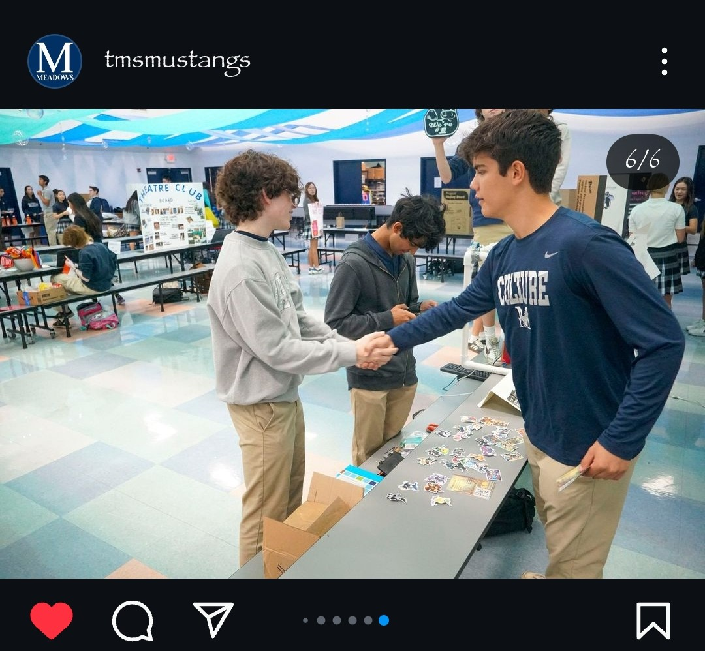
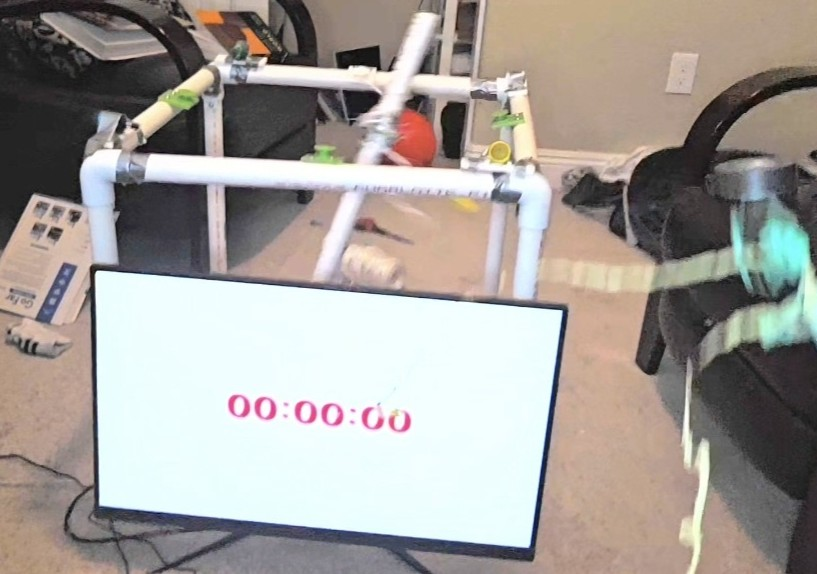
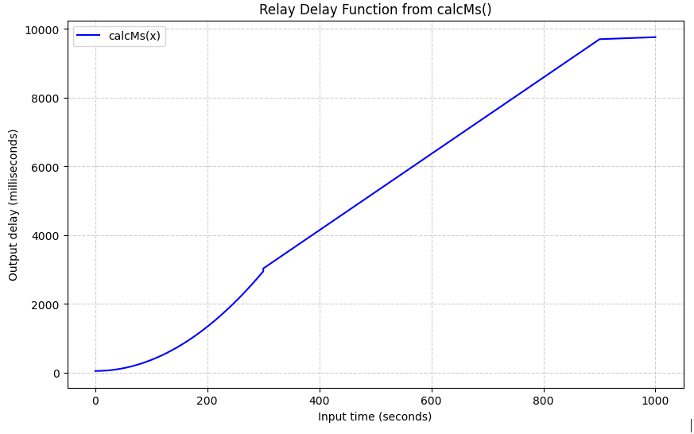
HackNight Project: Pomodoro Quest June 2024
Prompt: Life often requires us to juggle side quests alongside main objectives. Create a project that emphasizes one of these "side quests". Context: A 24-hour competition at BB&N with about 60 people in teams of 2-4.
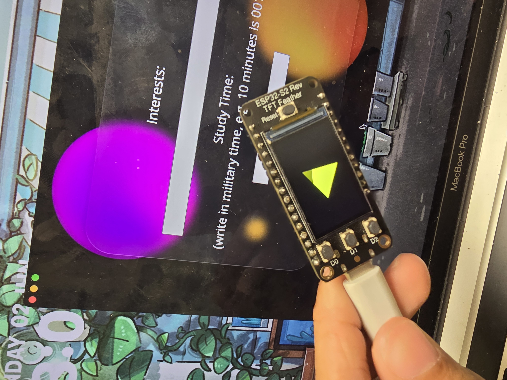
Goals
- Brainstorm ideas for the prompt
- Create a project plan (what each of us should prioritize)
- Crllect (teammate): app development for the interface with the hardware timer
- Me: hardware that receives the time from the app, displays it, and indicates the end
- Develop a protocol to communicate between the app and the hardware controller through the Adafruit API
Skills Learnt
- Tried different ways and protocols to communicate from controller to app (tried serial and a few other ways to send the time)
- First team project for engineering! Met some really cool people and made a new friend!
Key Components
Docs/Code
Final Thoughts
This was a really good capstone project for skills built up from microcontrollers with APIs, TFT display graphics, and timer/millis functionality. Going to Boston for this hackathon got me really inspired by other like-minded high schoolers!
If I were to go back:
- I originally tried to get the project working over USB data transfer (serial), but getting it to work with the app was a pain to handle in the moment. I would skip this and go straight to Bluetooth to have more time for other features.
- After the serial detour, I did not have time to implement Bluetooth (more realistic for users with multiple devices), so I would focus on that.
- With Bluetooth, I would also have convinced Crllct to build the app in Expo Go so we could use Bluetooth between the app and the server easily.
Photo Gallery
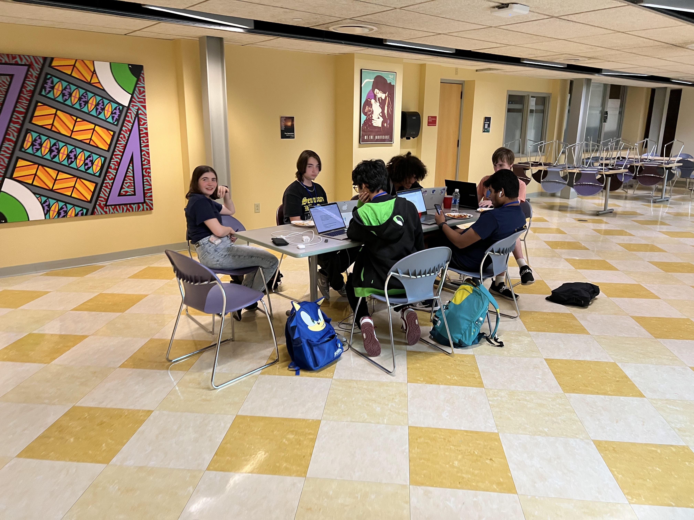
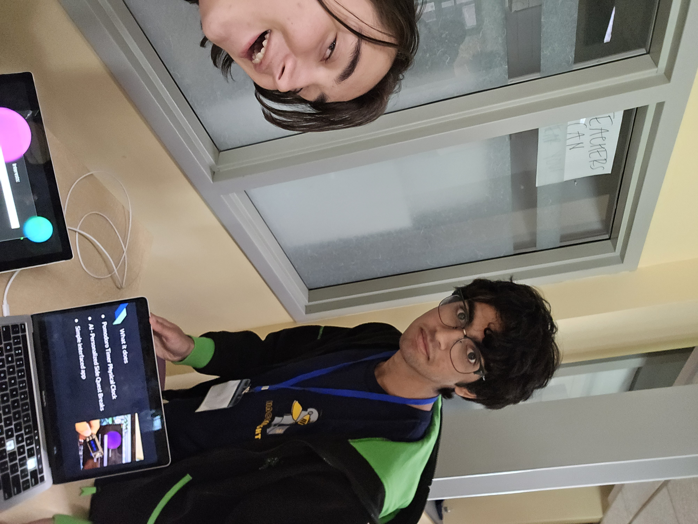
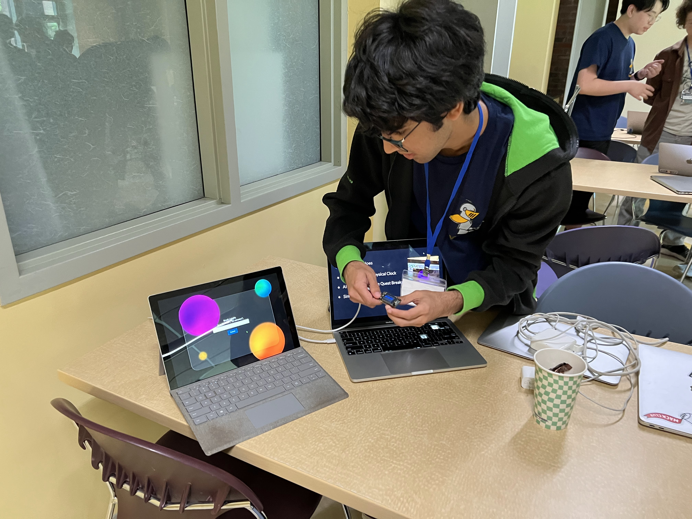
MetroTag - MIT Blueprint Project March 2025
Idea: MetroTag is a real-world game of tag using GPS locations. Players are either taggers (who chase) or runners (who flee), and they use their mobile devices to track each other's positions. Context: Built for MIT Blueprint Hackathon 2025 on a team of 4 within 12 hours. Credits: Adao (me), Crllct, Artificer, RamK (Discord and GitHub handles)
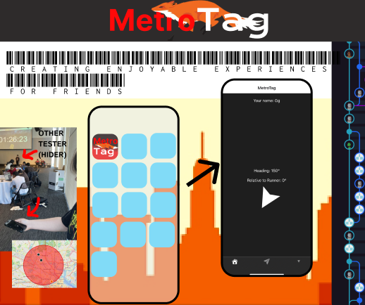
Goals
- Redesign tag, but make it city-wide
- Give the tagger an arrow-pointing interface to track runners
- Give runners a distance-from-tagger function
- Add create and join game functionality
- Compute the angle bearing to a runner's location
- Build a GPS map that tracks all players in a game
Skills Learnt
- Expo Go basics
- Bearing calculation from latitude and longitude
- Flask setup for lobbies
- GPS tracking with LeafletJS
Key Components
Docs and Code
Docs have all code explained!Final Thoughts
A completely new experience working with mobile app development and using a lot of JS and Python in Flask. Although we had a bunch of git merge errors, two coding beginners, and a lot of fights, we eventually made up and got to work really well together!
If I were to go back:
- Start with the Flask server at first. It took a long time trying to use another service.
- Know how to handle git merge conflicts from the start.
- Add some cool powerup features around the map along with a border area.
Photo Gallery
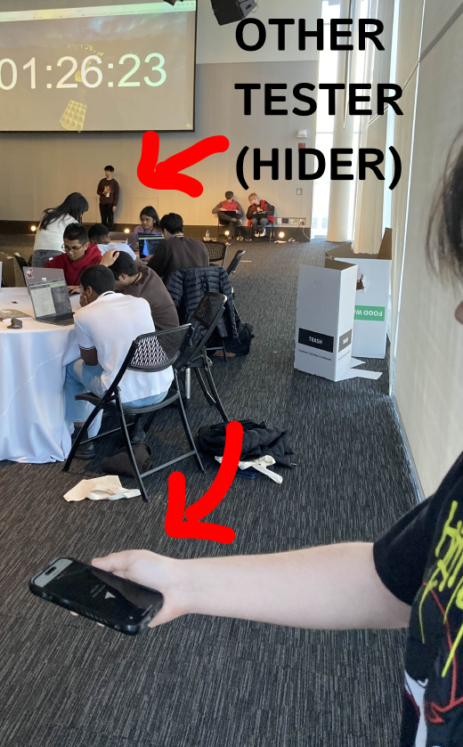
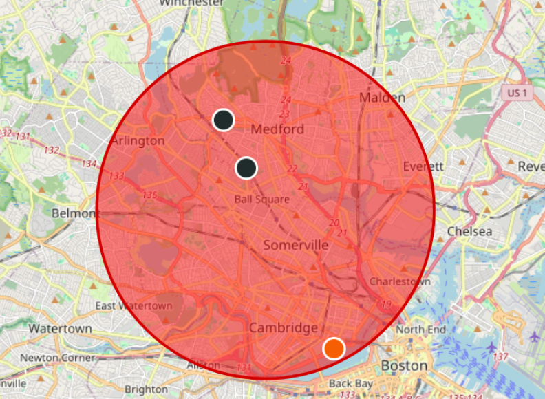
Rhythm Game Controller Build September 2023
Task: Build a budget-friendly rhythm game controller (the usual ones average around $188!)
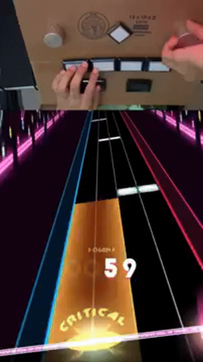
Goals
- Understand the electronics behind a controller
- Understand button interrupts and debouncing
- Understand how a rotary encoder works and how it can move the mouse position for software through a microcontroller
- Alter the code to add a mode-switching function for different software's input
- Fully build and execute my first big project!
Skills Learnt
- Soldering
- How to crimp, and what a daisy chain is
Key Components
Docs/Code
Final Thoughts
This was one of my favorite projects since it was the biggest step I had taken toward building with custom hardware. I was so scared I would purchase incompatible parts, or mess up the soldering (which I did a few times), and never finish. After a lot of trial and error, I got everything working and it was such a rewarding experience!
If I were to go back:
- I would use wire crimps instead of alligator clips. Using alligator clips made the wiring a mess, but I was worried I would do something wrong with crimps. I'm thankfully comfortable with them now.
CodexScope Learning Board January-March 2024
Task: Develop a learning board for microcontrollers and TFT displays
IMPORTANT: This project was not fully finished, but it was useful for figuring out content for CircuitCharm and teaching electronics basics while reviewing my own understanding of electronics.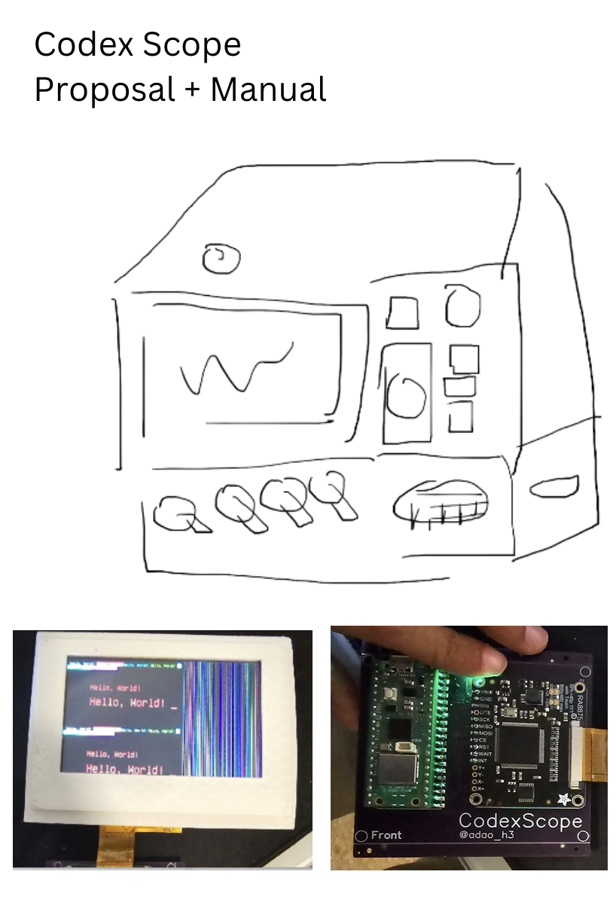
Goals
- Work out how I would want to learn electronics if I could start again, to design a good learning device
- Design the device
- Make a manual laying out how to use it
Key Components
Skills Learnt
- A tiny bit of OnShape for cases
- EasyEDA and the PCB design process (basics)
- C++ file application for I/O sensors
Docs/Code
Final Thoughts
Although I didn't finish the full project and manual, the experience helped me format some of the curriculum for Tech Club and CircuitCharm.
Two things I would do better going back:
- Create a more organized project plan (I was figuring it out as I went)
- Protect the TFT screen. It cracked twice in travel, and I stopped the project because the part is expensive and it was a large time setback.
If I were to continue this project:
- Complete the interactive software tutorials on the TFT display
- Add more sensor modules and expansion options
Photo Gallery
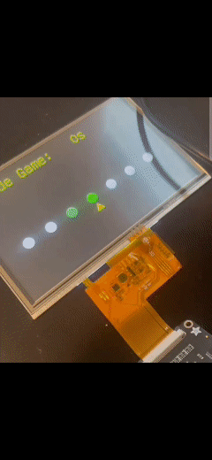
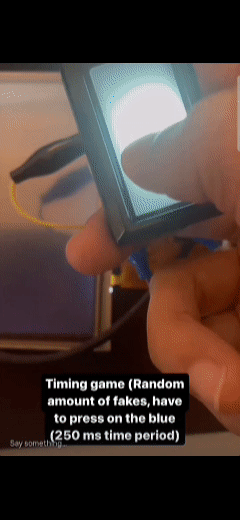
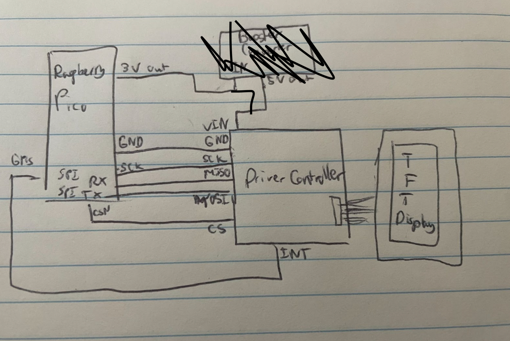
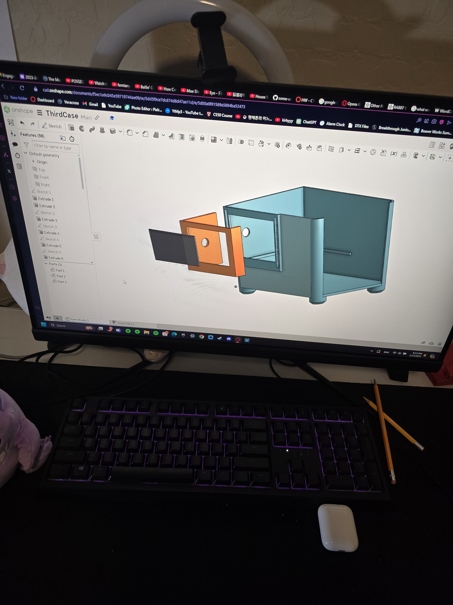
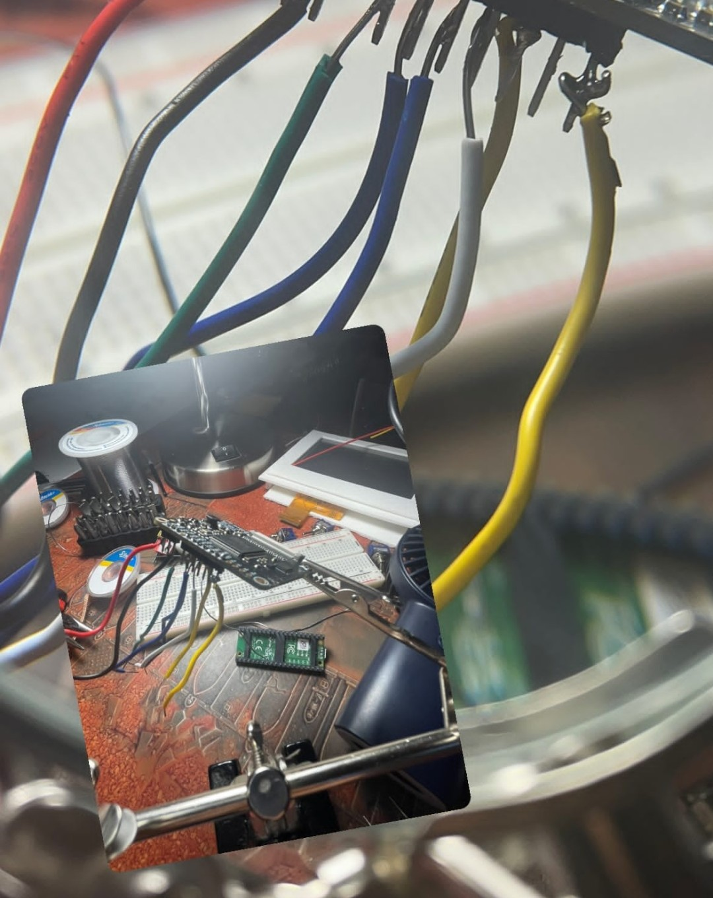
Cookie Buzz Game - Tech Club Fair Project August 2025
Idea: Create a simple two-player buzzer game for the Tech Club Fair to attract people to the booth. Winner gets a cookie! Context: Because of a hectic week, I built this in about 4-5 hours the night before. Was fun!
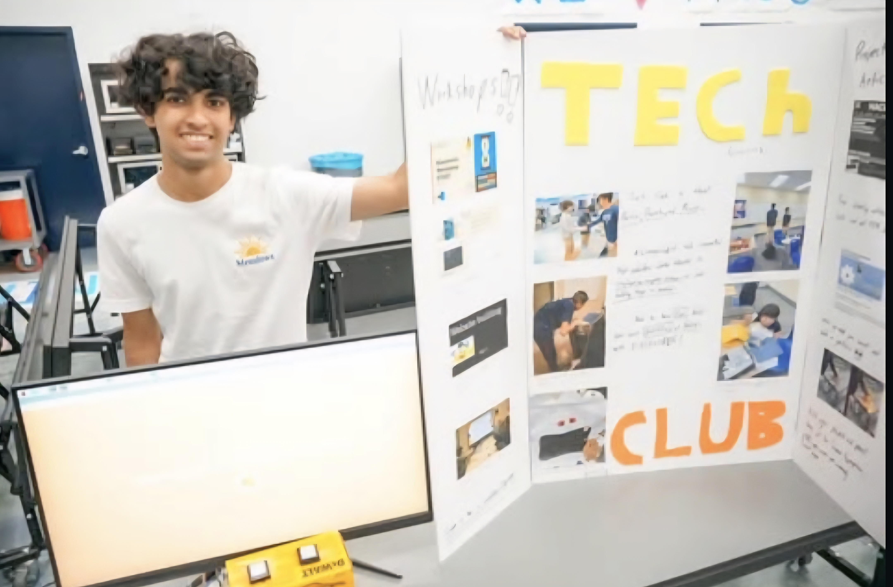
Key Components
Final Thoughts
I wish I could have done something bigger, but it was still fun to build something quick and a little different. 25 signups achieved again!
If I were to go back:
- I would give myself more time to add sound effects, a cooler UI, and a more complex game.
Photo Gallery
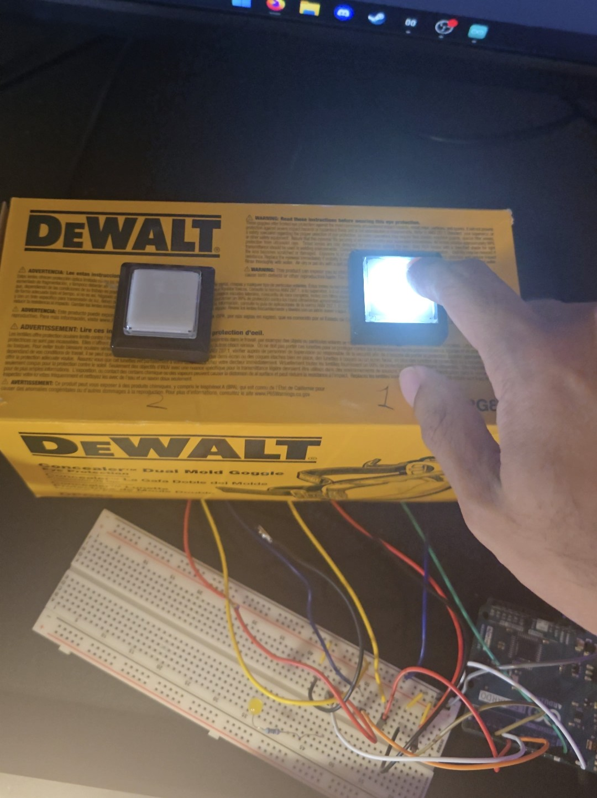
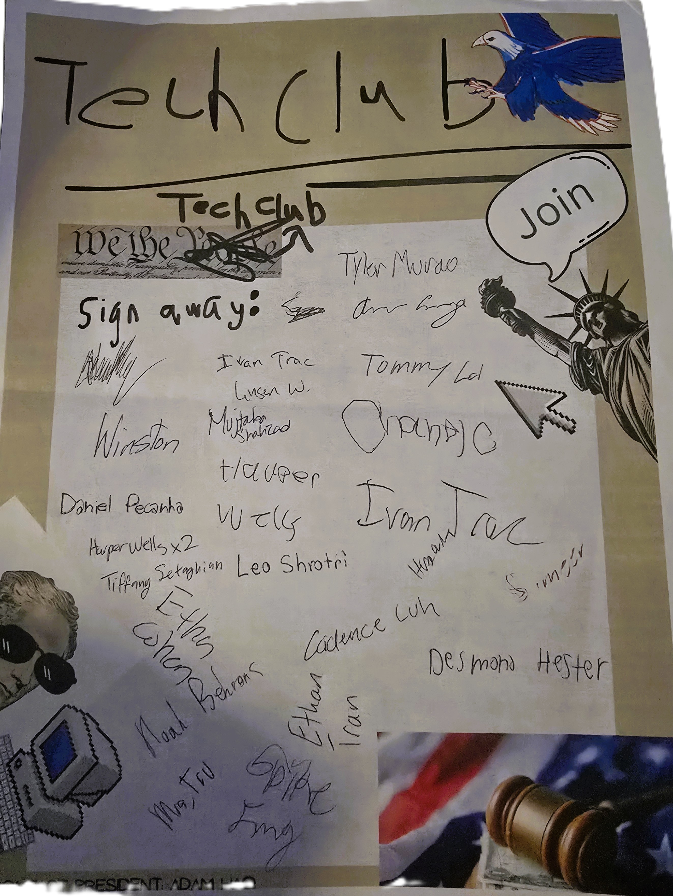
Quaver Achievement Fetch on TFT (API) December 2023
Task: A TFT display that fetches rhythm game data from the Quaver API and displays my achievements.
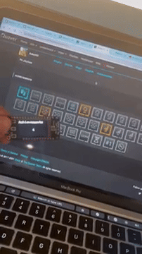
Goals
- Understand what an API is
- Understand how to use APIs from a specific source (Postman)
- Understand how to use WiFi on an ESP32-S2 to fetch this data
- Understand TFT refreshing and get more comfortable with the display library
Skills Learnt
- API usage and WiFi basics for microcontrollers
Key Components
Docs/Code
Final Thoughts
These skills became critical in later projects where I needed to fetch data from other interfaces such as Adafruit IO and local servers. I also got more comfortable with the TFT display library and rendering text on the screen.
If I were to go back:
- I would experiment more with the TFT display library and get my username and profile picture on the screen as well (I was having trouble with this at the time).
- I would handle the screen refresh better. When fetching data from the API, the number is blacked out on the screen. I would wait for the API to receive data before refreshing, so the screen doesn't have to empty itself first.
SkillTree Management System June 2024
A C++ terminal program that manages tasks and randomizes the selection of uncompleted ones. The sample version uses JS.
NOTE: The simulation version does NOT run off the original C++ code. The original ran on Replit in a simulator environment.Features
- Task dependency management (prerequisites system)
- Random task selection by category
- Progress tracking and completion marking using a save-and-parse system on a saveState file
- Categories: Projects, Skills, Studies, Workout
Skills Learnt
- Applying OOP from my Computer Science A class
- Basics of how file saves work and how data is parsed
Technologies Used
Docs/Code
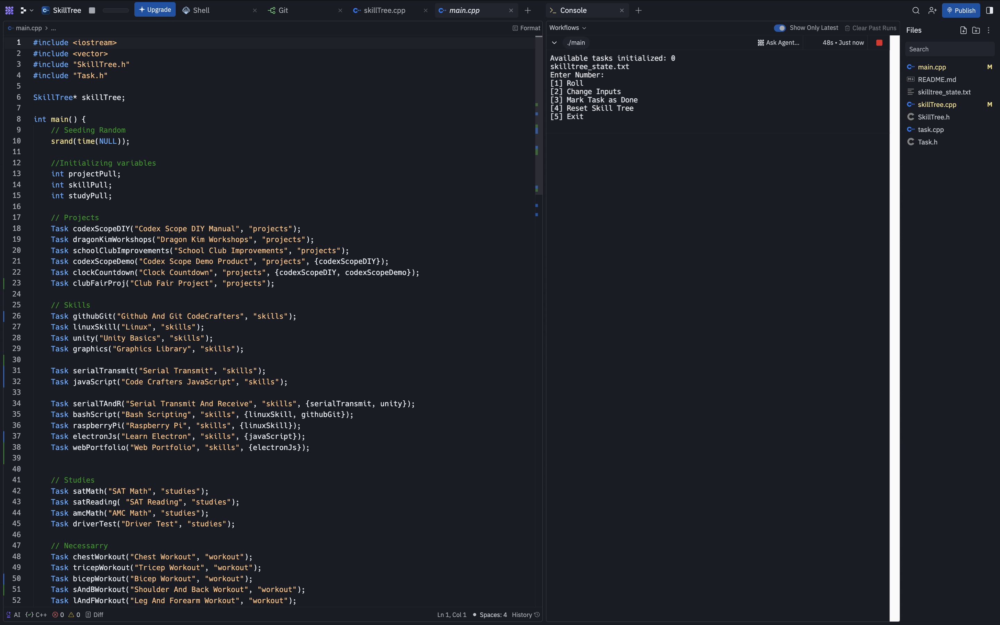
How to Use
Note: The original code worked in the terminal on Replit. Since Replit moved publishing to a premium service, the working version can't be used without a paid subscription.
Project Architecture
This prototype demonstrates:
- Random task selection by category
- Clean command-line interface design
Full version features:
- Object-oriented design with Task and SkillTree classes
- Task dependency management (prerequisites system)
- Persistent progress storage using txt file storage